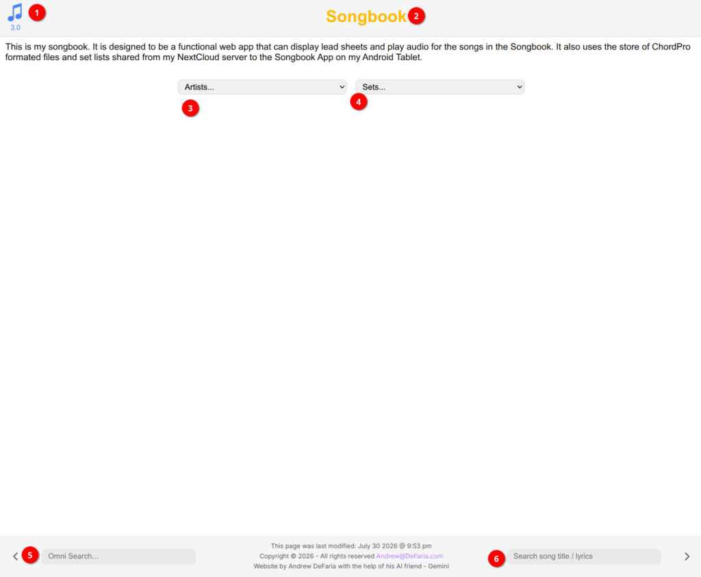
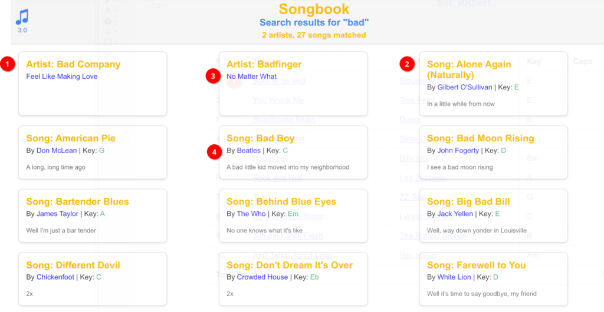
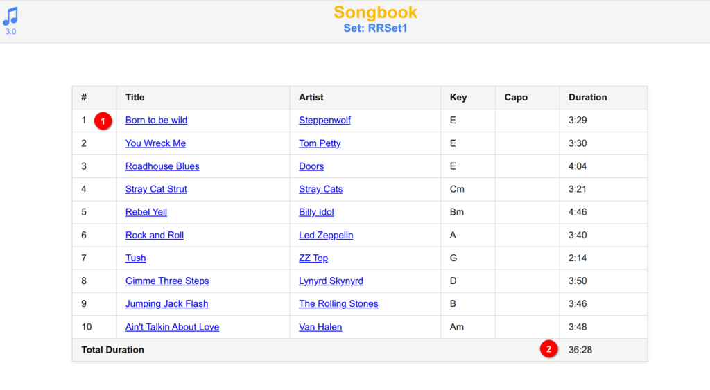
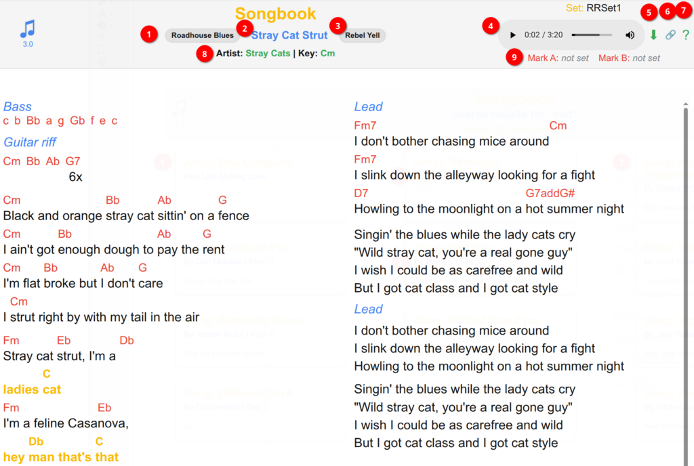
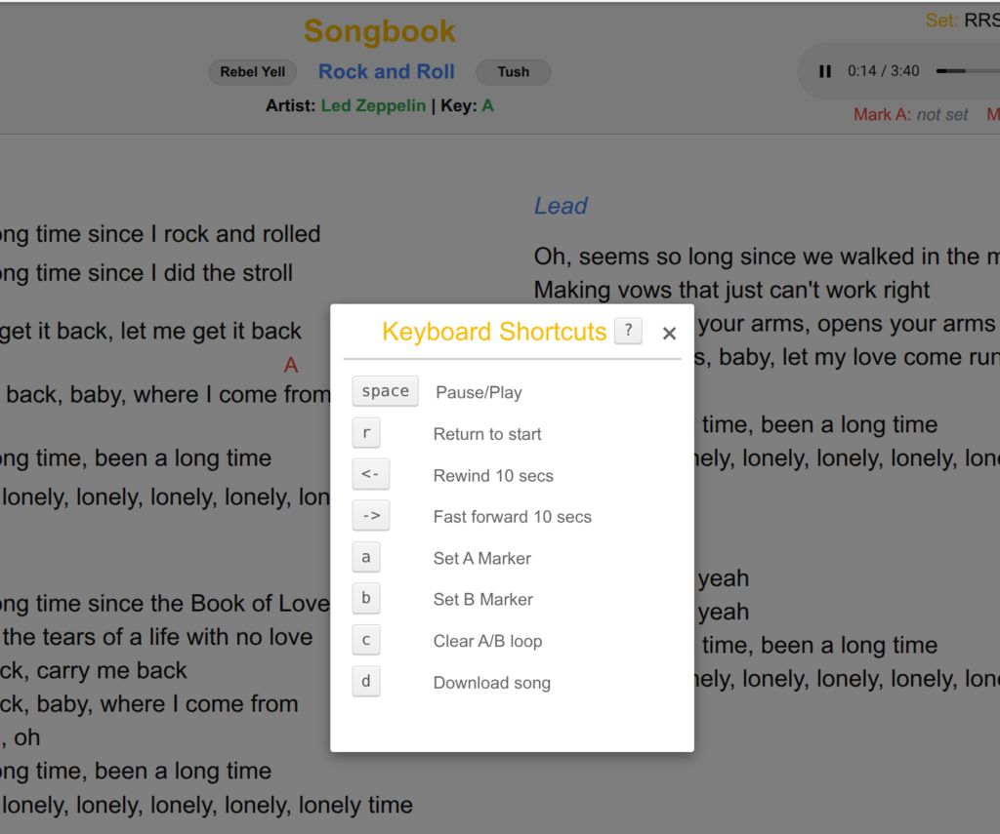

Introduction
The Songbook application (https://defaria.com/songbook) is customized to present leadsheets and play audio dynamically. To navigate back to the main landing page of the Songbook at any time, you can click either the little music note in the top left1 or the main "Songbook" title header2.
Artist and Set Navigation
The system provides two intuitive selection dropdowns to locate your music: one for Artists3 and one for Sets4.
There is also an interactive Search song title / lyrics6 tool. This allows you to find songs by typing key terms present in the title or the body of the lyrics. There is no need to type the exact title; choosing a relatively unique keyword yields the best results. For example, searching for "love" will return too many matches, whereas a unique word like "breeze" is far more efficient. As you type, qualifying matches will immediately appear below the search bar.

Omni Search Cards
Located on the left is the Omni Search5 box. The Omni Search scans multiple criteria at once, querying for individual songs2 as well as artists1, and organizing the findings into clean cards for your selection. The song titles3 and artist profiles4 are mapped with links for immediate navigation.

Setlist Player
Once you select an Artist or a Set (e.g. Set → RRSet1), the setlist details will load. The interface lists all songs included in the set along with their key signature and capo settings.
Selecting any song title1 will open the song player page. While in setlist mode, the system automatically advances to the next song in the set list once the current track completes. The footer display also shows the calculated total duration2 of the entire set list.

Song Player & Controls
The song page renders lyrics and chord symbols (when available) in a clean, readable two-column layout. When you load a song from a setlist, the page activates supplementary navigation controls:

Navigation options include:
- Previous Song1
- Song Title Link2 (reveals the raw text files)
- Next Song3 (supports uninterrupted rehearsing)
The top-right corner displays the custom media player4. It is equipped with quick utility controls: the download icon (down-arrow)5 saves the MP3 locally, the share icon6 copies a direct URL of the song page, and the question mark (?) icon7 displays the modal containing keyboard shortcut mappings.

Mark A & B Loop Modifiers
The Mark A9 and Mark B loop points are extremely useful for practicing. You can isolate any segment of a song to loop continuously during playback. To define loop limits during a song, simply type a on your keyboard to set the start marker and b to set the end marker. The player will instantly repeat the selection, helping you lock down challenging transitions.